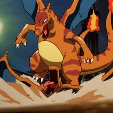

About Charizard
Charizard is awesome.
Charizard characteristics
Charizard bringing hell
- He's a big boy
- He brings the fire
- He's a baddie
Charizard's friends
Charizard has no friends. His best friend is bringing the fire.
Click on the links below to read more about them